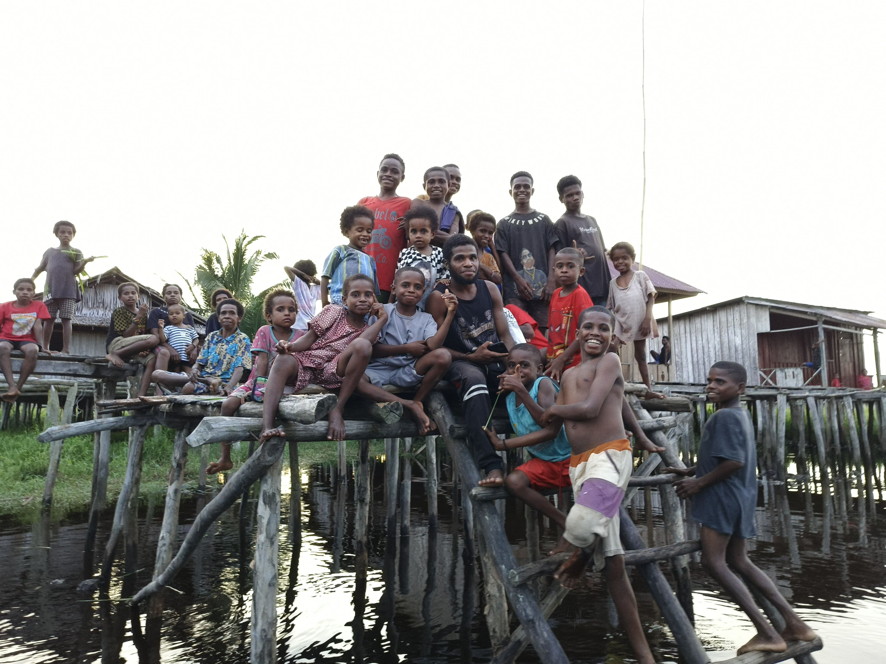
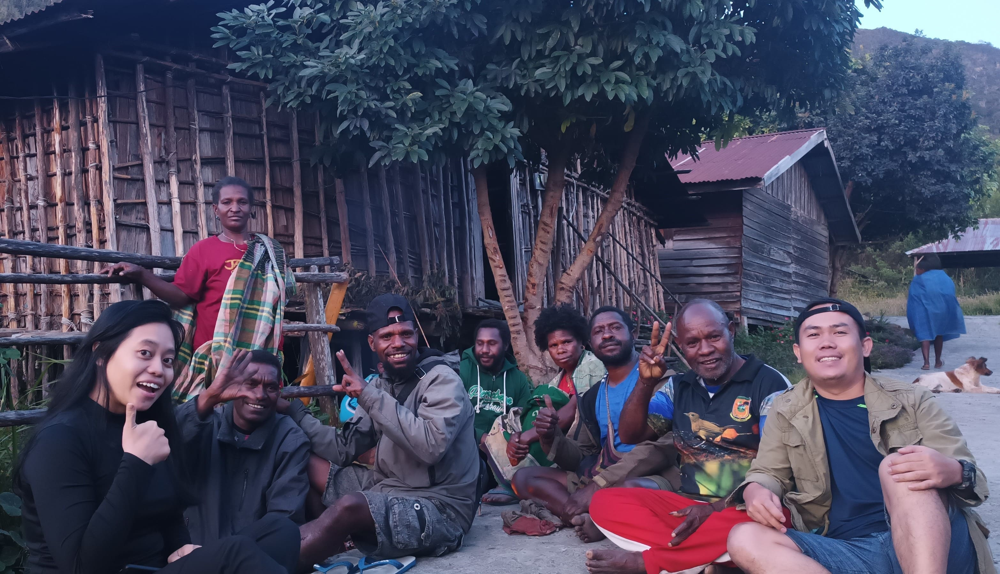

Penerjemahan Alkitab
Penerjemahan Alkitab ke dalam bahasa hati setiap komunitas bahasa di Papua
Selengkapnya...→


Penerjemahan Alkitab ke dalam bahasa hati setiap komunitas bahasa di Papua
Selengkapnya...→YMP3 Mendukung Pendidikan Anak Usia Dini (PAUD) dan Taman Kanak-Kanak (TK)
Selengkapnya... →Pelayanan penerjemahan Alkitab dan Pendidikan yang dilakukan oleh para Rohaniawan
Selengkapnya...→
Melalui pelayanan yang dilakukan YMP3, puji Tuhan banyak jiwa yang merasa diberkati. YMP3 percaya bahwa setiap jiwa memiliki masa depan yang cerah, penuh sukacita, harapan, dan damai sejahtera di dalam Tuhan Yesus Kristus.
Lihat Cerita Lainnya →
Gembala Junior Sebedeus Donsiba (26) tengah menjelaskan kepada peserta yang berjumlah 15 orang. Sebe, panggilan akrabnya- bercerita kisah Yesus yang menyembuhkan orang yang kerasukan setan dalam Bahasa Hatam, bahasa suku di Kampung Minyambouw.

Awal bulan Mei tepatnya tanggal 1, tim YMP3 berangkat ke Kebar, salah satu distrik di Kabupaten Tambrauw, Provinsi Papua Barat Daya. Tim berangkat ke daerah itu untuk melaksanakan kegiatan pelatihan kepemimpinan Kelompok Persekutuan Cerita (KPC)...

YMP3 selalu mengadakan pelatihan bagi para fasilitator yang didampingi oleh seorang pendamping. Pertemuan dan pelatihan ini sekaligus memperkaya dan meningkatkan kemampuan fasilitator dalam melaksanakan tugasnya di tempat atau...
"Sebab Aku ini mengetahui rancangan-rancangan apa yang ada padaku mengenai kamu..."
Yeremia 29:11a